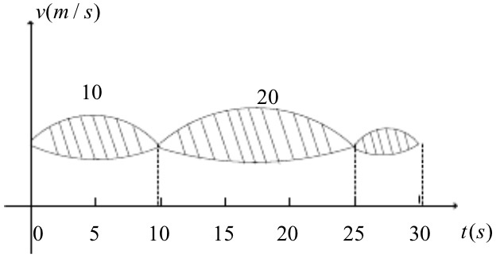

2017-数学A-1
若函数f(x)={1−cosx√ax,bx>0x≤0在x=0处连续,则()
A.ab=12
B.ab=−12
C.ab=0
D.ab=2
2017-数学A-2
设函数f(x)可导,且f(x)f′(x)>0,则()
A.f(1)>f(−1)
B.f(1)<f(−1)
C.|f(1)|>|f(−1)|
D.|f(1)|<|f(−1)|
2017-数学A-3
函数f(x,y,z)=x2y+z2在点(1,2,0)处沿向量u=(1,2,2)的方向导数
为()
A.12
B.6
C.4
D.2
2017-数学A-4
甲乙两人赛跑,计时开始时,甲在乙前方10(单位:m)处,图中实线表示甲的
速度曲线v=v1(t)(单位:m/s),虚线表示乙的速度曲线v=v2(t),三块
阴影部分面积的数值依次为10,20,3,计时开始后乙追上甲的时刻记为t0
(单位:s),则()

A.t0=10
B.15<t0<20
C.t0<25
D.t0>25
2017-数学A-5
设α是n维单位列向量,E为n阶单位矩阵,则()
A.E−ααT不可逆
B.E+ααT不可逆
C.E+2ααT不可逆
D.E−2ααT不可逆
2017-数学A-6
设A=⎡⎣⎢⎢200020011⎤⎦⎥⎥,B=⎡⎣⎢⎢200120001⎤⎦⎥⎥,C=⎡⎣⎢⎢100020002⎤⎦⎥⎥,则()
A.A与C相似,B与C相似
B.A与C相似,B与C不相似
C.A与C不相似,B与C相似
D.A与C不相似,B与C不相似
2017-数学A-7
设A,B为随机概率,若0<P(A)<1,0<P(B)<1,
则P(A|B)>P(A|B¯)的充分必要条件是
A.P(B|A)>P(B|A¯)
B.P(B|A)<P(B|A¯)
C.P(B¯|A)>P(B|A¯)
D.P(B¯|A)<P(B|A¯)
2017-数学A-8
设X1,X2...Xn(n≥2)为总体N(μ,1)的简单随机样本,
记X¯=1n∑ni=1Xi,则下列结论不正确的是()
A.∑ni=1(Xi−μ)2服从χ2分布
B.2(Xn−X1)2服从χ2分布
C.∑ni=1(Xi−X¯)2服从χ2分布
D.n(X¯−μ)2服从χ2分布
2017-数学A-9
已知函数f(x)=11+x2,则f(3)(0)=()
2017-数学A-10
微分方程y″+2y′+3y=0的通解为y=()
2017-数学A-11
若曲线积分∫Lxdx−aydyx2+y2−1在区域D={(x,y)|x2+y2<1}内与路径无关,
则a=()
2017-数学A-12
幂级数∑∞n=1(−1)n−1xn−1在区间(−1,1)内的和函数S(x)=()
2017-数学A-13
设矩阵A=⎛⎝⎜⎜110011121⎞⎠⎟⎟,α1,α2,α3为线性无关的3维列向量组,
则向量组Aα1,Aα2,Aα3的秩为()
2017-数学A-14
设随机变量X的分布函数为F(x)=0.5Φ(x)+0.5Φ(x−42),
其中Φ(x)为标准正态分布函数,则E(X)=()
2017-数学A-15
设函数f(u,v)具有2阶连续偏导数,y=f(ex,cosx),求dydx∣∣x=0,d2ydx2∣∣∣x=0
2017-数学A-16
求limn→∞∑nk=1kn2ln(1+kn)
2017-数学A-17
已知函数y(x)由方程x3+y3−3x+3y−2=0确定,求y(x)的极值
2017-数学A-18
设函数f(x)在区间[0,1]上具有2阶导数,且f(1)>0,limx→0+f(x)x<0
证明:
(I)方程f(x)=0在区间(0,1)内至少存在一个实根
(II)方程f(x)f′(x)+(f′(x))2=0在区间(0,1)内至少存在两个不同实根
2017-数学A-19
设薄片型物体S是圆锥面z=x2+y2‾‾‾‾‾‾‾√被柱面z2=2x割下的有限部分,
其上任一点的密度为μ=9x2+y2+z2‾‾‾‾‾‾‾‾‾‾‾‾√.记圆锥面与柱面的交线为C
(I)求C与xOy平面上的投影曲线的方程
(II)求S的质量
2017-数学A-20
设3阶矩阵A=(α1,α2,α3)有3个不同的特征值,且α3=α1+2α2
(I)证明r(A)=2
(II)若β=α1+α2+α3,求方程组Ax=β的通解
2017-数学A-21
设二次型f(x1,x2,x3)=2x21−x22+ax23+2x1x2−8x1x3+2x2x3在
正交变换X=QY下的标准型λ1y21+λ2y22,求a的值及一个正交矩阵Q
2017-数学A-22
随机变量X,Y相互独立,且X的概率分布为P(X=0)=P(X=2)=12,
Y的概率密度为f(y)={2y,0,0<y<1其他
(I)求P(Y≤EY)
(II)求Z=X+Y的概率密度
2017-数学A-23
某工程师为了解一台天平的精度,用该天平对一物体的质量做n次测试,该物体
的质量μ是已知的,设n次测量的结果X1,X2...Xn相互独立且均服从正态
分布N(μ,σ2),该工程师记录的是n次测量的绝对误差Zi=|Xi−μ|
(i=1,2,...,n),利用Z1,Z2...Zn估计σ
(I)求Zi的概率密度
(II)利用一阶矩求σ的矩估计量